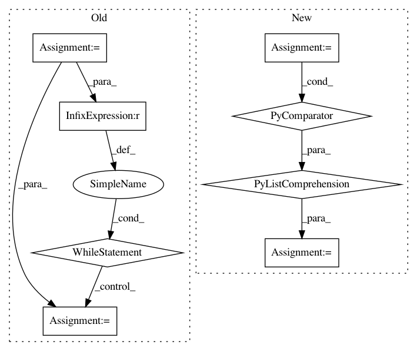

ef2e39e5aa3f519d6679b5e217524671eab2a641,pythainlp/tag/orchid.py,,tag_signs,#Any#,35
Before Change
Tag signs and symbols with their tags.
This function is to be used a preprocessing before the actual POS tagging.
i = 0
while i < len(words):
if words[i] in ORCHID_SIGN_TAGS.keys():
words[i] = ORCHID_SIGN_TAGS[words[i]]
i += 1
return words
def tag_to_text(word: str) -> str:
After Change
This function is to be used a preprocessing before the actual POS tagging.
keys = ORCHID_SIGN_TAGS.keys()
words = [
ORCHID_SIGN_TAGS[word] if word in keys else word for word in words
]
return words
def tag_to_text(word: str) -> str:
In pattern: SUPERPATTERN
Frequency: 3
Non-data size: 8
Instances
Project Name: PyThaiNLP/pythainlp
Commit Name: ef2e39e5aa3f519d6679b5e217524671eab2a641
Time: 2020-08-17
Author: arthit@gmail.com
File Name: pythainlp/tag/orchid.py
Class Name:
Method Name: tag_signs
Project Name: SheffieldML/GPy
Commit Name: d636c8c30ce696ad27360b4f31a439263b98c2b5
Time: 2014-02-20
Author: james.hensman@gmail.com
File Name: GPy/util/caching.py
Class Name: Cacher
Method Name: on_cache_changed
Project Name: lanpa/tensorboardX
Commit Name: e4642ed83113bf69b4ac0da6f9b260b5a01a1e3e
Time: 2018-06-28
Author: ml@instagram.com
File Name: tensorboardX/writer.py
Class Name: SummaryWriter
Method Name: __init__